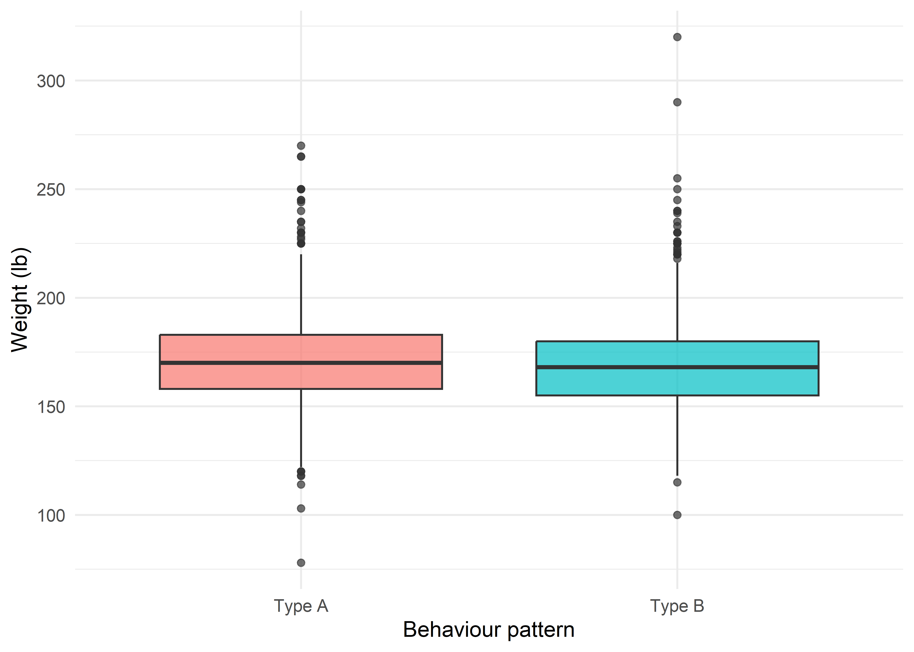
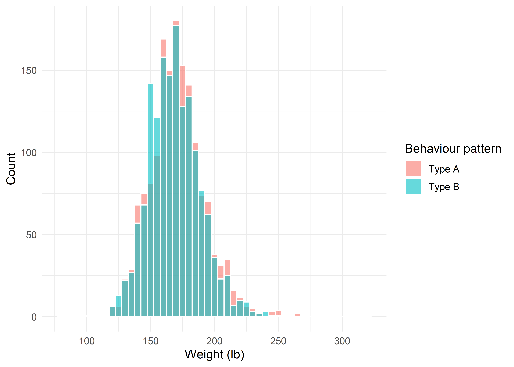
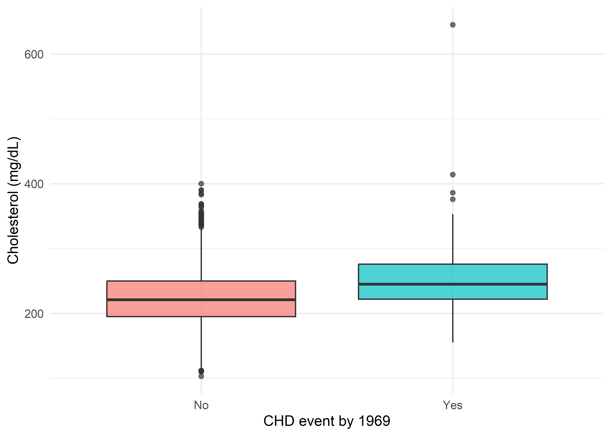

| id | weight |
|---|---|
| 11038 | 160 |
| 11355 | 165 |
| 3068 | 167 |
| 12711 | 165 |
| 12264 | 170 |
| 12591 | 160 |
| 11058 | 177 |
| 3465 | 170 |
| id | weight |
|---|---|
| 10166 | 185 |
| 3572 | 203 |
| 21339 | 160 |
| 13051 | 230 |
| 21039 | 185 |
| 13482 | 175 |
| 3202 | 179 |
| 13382 | 150 |
By the end of this chapter, you should be able to:
A very common design in health research compares a numeric outcome between two separate, non-overlapping groups of subjects — for example, smokers vs. non-smokers, treatment vs. control, or (as in this chapter) Type A vs. Type B behaviour pattern. The word “independent” here means the two samples consist of different individuals with no natural pairing between them (contrast this with the paired designs covered in a later chapter).
We will use two grouping variables already present in the WCGS data:
dibpat — behaviour pattern, dichotomised as Type A (\(n=1{,}589\)) vs. Type B (\(n=1{,}565\)) — nearly equal group sizes, a good case to illustrate Student’s test.chd69 — whether the subject had a coronary heart disease event by the end of follow-up, No (\(n=2{,}897\)) vs. Yes (\(n=257\)) — very unequal group sizes together with unequal variances and skew, a good case to illustrate Welch’s test and the Mann-Whitney U test.ggplot(wcgs, aes(x = dibpat, y = weight, fill = dibpat)) +
geom_boxplot(alpha = 0.7, show.legend = FALSE) +
labs(x = "Behaviour pattern", y = "Weight (lb)") +
theme_minimal(base_size = 12)
ggplot(wcgs, aes(x = chd69, y = chol, fill = chd69)) +
geom_boxplot(alpha = 0.7, show.legend = FALSE) +
labs(x = "CHD event by 1969", y = "Cholesterol (mg/dL)") +
theme_minimal(base_size = 12)

Three procedures are commonly used:
| Test | Assumes equal variances? | Assumes (approx.) normality? | Uses |
|---|---|---|---|
| Student’s (pooled) \(t\)-test | Yes | Yes, in each group | Raw values |
| Welch’s \(t\)-test | No | Yes, in each group | Raw values |
| Mann-Whitney U (Wilcoxon rank-sum) | No | No | Ranks of the pooled values |
\[ H_0: \mu_1=\mu_2 \qquad H_1: \mu_1\ne\mu_2 \]
var.test()) or, preferably with non-normal data, Levene’s test.The two sample variances are combined into a single pooled variance estimate:
\[ s_p^2=\frac{(n_1-1)s_1^2+(n_2-1)s_2^2}{n_1+n_2-2} \tag{21.1}\]
\[ t=\frac{\bar x_1-\bar x_2}{\sqrt{s_p^2\left(\dfrac1{n_1}+\dfrac1{n_2}\right)}} \qquad \sim\; t_{(n_1+n_2-2)} \text{ under } H_0 \tag{21.2}\]
\[ (\bar x_1-\bar x_2)\pm t_{(1-\alpha/2,\;n_1+n_2-2)}\sqrt{s_p^2\left(\frac1{n_1}+\frac1{n_2}\right)} \]
We draw reproducible random subsamples of \(n=8\) men from each behaviour-pattern group and compare weight (lb).
| id | weight |
|---|---|
| 11038 | 160 |
| 11355 | 165 |
| 3068 | 167 |
| 12711 | 165 |
| 12264 | 170 |
| 12591 | 160 |
| 11058 | 177 |
| 3465 | 170 |
| id | weight |
|---|---|
| 10166 | 185 |
| 3572 | 203 |
| 21339 | 160 |
| 13051 | 230 |
| 21039 | 185 |
| 13482 | 175 |
| 3202 | 179 |
| 13382 | 150 |
#> Group n Mean Variance SD
#> 1 Type A 8 166.750 31.92857 5.650537
#> 2 Type B 8 183.375 616.26786 24.824743\[ s_p^2=\frac{(8-1)(31.93)+(8-1)(616.27)}{8+8-2}=\frac{7(31.93)+7(616.27)}{14} \]
sp2 <- ((n1 - 1) * v1 + (n2 - 1) * v2) / (n1 + n2 - 2)
sp2#> [1] 324.1\[ t=\frac{\bar x_1-\bar x_2}{\sqrt{s_p^2(1/n_1+1/n_2)}}=\frac{166.75-183.375}{\sqrt{324.10\times(1/8+1/8)}} \]
#> SE t df p_value
#> 1 9.001364 -1.846942 14 0.08599752t.test(x1, x2, var.equal = TRUE)#>
#> Two Sample t-test
#>
#> data: x1 and x2
#> t = -1.8, df = 14, p-value = 0.09
#> alternative hypothesis: true difference in means is not equal to 0
#> 95 percent confidence interval:
#> -35.931 2.681
#> sample estimates:
#> mean of x mean of y
#> 166.8 183.4The hand-calculated \(t=-1.847\), \(df=14\), \(p=0.086\) match R’s t.test(..., var.equal = TRUE) exactly. At the \(5\%\) level we do not reject \(H_0\) in this small subsample.
Look closely at the two group variances above: \(31.9\) vs. \(616.3\) — a nearly \(20\)-fold difference, purely a feature of this small, randomly drawn \(n=8\) subsample (the full-population variance ratio, shown later, is actually close to \(1\)). This is exactly why we should never eyeball a handful of numbers and assume equal variances — a formal test, on adequate sample sizes, is needed.
Use Welch’s test instead of Student’s when the assumption of equal population variances is doubtful — either because a formal test (an \(F\)-test or, more robustly, Levene’s test) rejects equal variances, or as a safe default: many statisticians now recommend using Welch’s test routinely, since it performs almost identically to Student’s test when variances are equal, but avoids the inflated Type I error that Student’s test can produce when variances differ, especially with unequal sample sizes.
Welch’s test does not pool the variances; each group contributes its own variance to the standard error:
\[ t=\frac{\bar x_1-\bar x_2}{\sqrt{\dfrac{s_1^2}{n_1}+\dfrac{s_2^2}{n_2}}} \tag{23.1}\]
The degrees of freedom are not simply \(n_1+n_2-2\); instead the Welch-Satterthwaite approximation is used, which can take non-integer values:
\[ df_{Welch}=\frac{\left(\dfrac{s_1^2}{n_1}+\dfrac{s_2^2}{n_2}\right)^2} {\dfrac{(s_1^2/n_1)^2}{n_1-1}+\dfrac{(s_2^2/n_2)^2}{n_2-1}} \tag{23.2}\]
Using the same two subsamples as above.
\[ SE=\sqrt{\frac{31.93}{8}+\frac{616.27}{8}} \]
#> [1] 9.001364Notice that because \(n_1=n_2=8\) here, \(SE_{Welch}=\sqrt{(s_1^2+s_2^2)/n}\) is numerically identical to \(SE_{pooled}=\sqrt{s_p^2 \times 2/n}\) from the Student’s test above — this is a general fact whenever the two sample sizes are equal. What differs between the two tests, in this equal-\(n\) case, is entirely the degrees of freedom.
\[ df_{Welch}=\frac{(31.93/8+616.27/8)^2}{\dfrac{(31.93/8)^2}{7}+\dfrac{(616.27/8)^2}{7}} \]
#> [1] 7.723392Because Group B’s variance so dominates Group A’s in this subsample, \(df_{Welch}=7.72\) — pulled down close to \(n_2-1=7\) (Welch’s df is always between \(\min(n_1,n_2)-1\) and \(n_1+n_2-2\); the more unequal the variances, the closer it moves to the smaller group’s own df).
#> t df p_value
#> 1 -1.846942 7.723392 0.1032826t.test(x1, x2, var.equal = FALSE)#>
#> Welch Two Sample t-test
#>
#> data: x1 and x2
#> t = -1.8, df = 7.7, p-value = 0.1
#> alternative hypothesis: true difference in means is not equal to 0
#> 95 percent confidence interval:
#> -37.512 4.262
#> sample estimates:
#> mean of x mean of y
#> 166.8 183.4The hand-calculated values match R’s default t.test() (Welch’s is R’s default for two-sample tests) exactly: \(t=-1.847\) (identical to Student’s, as expected with equal \(n\)), but \(df=7.72\) (much smaller than Student’s \(14\)), giving a wider, more conservative \(p\)-value (\(0.103\) vs. \(0.086\)) and a wider confidence interval. This illustrates precisely why Welch’s test matters even when the two \(t\)-statistics coincide: unequal variances erode the effective degrees of freedom, and ignoring that (as Student’s test does) can overstate precision.
var.test(weight ~ dibpat, data = wcgs) # F-test (sensitive to non-normality)#>
#> F test to compare two variances
#>
#> data: weight by dibpat
#> F = 1.1, num df = 1588, denom df = 1564, p-value = 0.3
#> alternative hypothesis: true ratio of variances is not equal to 1
#> 95 percent confidence interval:
#> 0.9527 1.1608
#> sample estimates:
#> ratio of variances
#> 1.052leveneTest(weight ~ dibpat, data = wcgs) # Levene's test (robust to non-normality)#> Levene's Test for Homogeneity of Variance (center = median)
#> Df F value Pr(>F)
#> group 1 0.36 0.55
#> 3152On the full cohort, both the \(F\)-test (\(p=0.32\)) and Levene’s test (\(p=0.55\)) agree the weight variances in Type A and Type B do not differ significantly — confirming that our small subsample’s apparent \(20\)-fold variance difference above was simply sampling noise, and that Student’s and Welch’s tests should (and, as we will see, do) give essentially the same answer on the full data.
Use the Mann-Whitney U test (equivalently, the Wilcoxon rank-sum test — the same procedure under two names) instead of a \(t\)-test when:
It tests whether observations from one group tend to be systematically larger than observations from the other (a shift in location/distribution), without assuming a particular distributional shape.
\[ H_0: \text{the two populations have the same distribution (no location shift)} \]
wilcox.test() reports \(W\), which equals \(U\) for the first-listed group).We draw reproducible random subsamples of \(n=8\) men from each CHD-event group (restricted to those with complete cholesterol) and compare total cholesterol — a variable we already know is right-skewed, with the CHD-event group additionally containing a genuine extreme outlier (\(645\) mg/dL, the maximum value in the entire cohort), making this a strong case for a rank-based test.
| id | chol |
|---|---|
| 10276 | 240 |
| 13129 | 226 |
| 2020 | 220 |
| 13409 | 220 |
| 12237 | 645 |
| 3499 | 300 |
| 10307 | 228 |
| 2084 | 208 |
| id | chol |
|---|---|
| 11320 | 225 |
| 12908 | 198 |
| 6090 | 265 |
| 10077 | 224 |
| 3207 | 189 |
| 11210 | 188 |
| 6079 | 223 |
| 19068 | 258 |
Note the value \(220\) occurs twice (both in the “Yes” group), so both receive the average rank \((5+6)/2=5.5\).
| chol | group | rank |
|---|---|---|
| 188 | No | 1.0 |
| 189 | No | 2.0 |
| 198 | No | 3.0 |
| 208 | Yes | 4.0 |
| 220 | Yes | 5.5 |
| 220 | Yes | 5.5 |
| 223 | No | 7.0 |
| 224 | No | 8.0 |
| 225 | No | 9.0 |
| 226 | Yes | 10.0 |
| 228 | Yes | 11.0 |
| 240 | Yes | 12.0 |
| 258 | No | 13.0 |
| 265 | No | 14.0 |
| 300 | Yes | 15.0 |
| 645 | Yes | 16.0 |
#> Group Rank_sum Total Expected
#> 1 Yes 79 136 136
#> 2 No 57 136 136\[ U_1=R_1-\frac{n_1(n_1+1)}{2}=79-36=43, \qquad U_2=R_2-\frac{n_2(n_2+1)}{2}=57-36=21 \]
#> U1 U2 U1+U2 n1*n2 U_test_statistic
#> 1 43 21 64 64 21\[ \mu_U=\frac{8\times8}{2}=32, \qquad \sigma_U=\sqrt{\frac{8\times8\times17}{12}}=9.522 \]
#> mu_U sigma_U z p_value
#> 1 32 9.521905 -1.155231 0.2479958wilcox.test(g1, g2) # default: continuity-corrected#>
#> Wilcoxon rank sum test with continuity correction
#>
#> data: g1 and g2
#> W = 43, p-value = 0.3
#> alternative hypothesis: true location shift is not equal to 0wilcox.test(g1, g2, correct = FALSE) # matches the hand normal-approximation#>
#> Wilcoxon rank sum test
#>
#> data: g1 and g2
#> W = 43, p-value = 0.2
#> alternative hypothesis: true location shift is not equal to 0R’s \(W=43\) is exactly our \(U_1\) (the “Yes” group is the first argument). Without the continuity correction, \(p=0.248\) matches our hand calculation; with it (R’s default), \(p=0.270\). Neither reaches significance in this small subsample — but note the extreme value (\(645\)) did not distort the result, because the Mann-Whitney test uses only its rank (the largest), unlike a \(t\)-test where it would inflate the group variance and mean substantially.
dibpat) — the “equal-variance” caseggplot(wcgs, aes(x = weight, fill = dibpat)) +
geom_histogram(binwidth = 5, alpha = 0.6, position = "identity", colour = "white") +
labs(x = "Weight (lb)", y = "Count", fill = "Behaviour pattern") +
theme_minimal(base_size = 12)
t.test(weight ~ dibpat, data = wcgs, var.equal = TRUE) # Student's#>
#> Two Sample t-test
#>
#> data: weight by dibpat
#> t = 2.4, df = 3152, p-value = 0.02
#> alternative hypothesis: true difference in means between group Type A and group Type B is not equal to 0
#> 95 percent confidence interval:
#> 0.3247 3.2686
#> sample estimates:
#> mean in group Type A mean in group Type B
#> 170.8 169.0t.test(weight ~ dibpat, data = wcgs, var.equal = FALSE) # Welch's#>
#> Welch Two Sample t-test
#>
#> data: weight by dibpat
#> t = 2.4, df = 3152, p-value = 0.02
#> alternative hypothesis: true difference in means between group Type A and group Type B is not equal to 0
#> 95 percent confidence interval:
#> 0.3249 3.2683
#> sample estimates:
#> mean in group Type A mean in group Type B
#> 170.8 169.0Interpretation: Student’s and Welch’s tests give virtually identical results (\(t=2.39\), \(df=3152\) vs. \(df=3151.7\), both \(p\approx0.017\)), exactly as expected given the near-equal variances confirmed earlier. Type A men weigh, on average, \(1.80\) lb more than Type B men (\(95\%\) CI \(0.32\) to \(3.27\) lb) — statistically significant given the large sample, though a modest effect in absolute terms.
chd69) — the “unequal-variance, skewed” caseggplot(wcgs, aes(x = chd69, y = chol, fill = chd69)) +
geom_boxplot(alpha = 0.7, show.legend = FALSE) +
labs(x = "CHD event by 1969", y = "Cholesterol (mg/dL)") +
theme_minimal(base_size = 12)
var.test(chol ~ chd69, data = wcgs)#>
#> F test to compare two variances
#>
#> data: chol by chd69
#> F = 0.73, num df = 2884, denom df = 256, p-value = 3e-04
#> alternative hypothesis: true ratio of variances is not equal to 1
#> 95 percent confidence interval:
#> 0.6052 0.8694
#> sample estimates:
#> ratio of variances
#> 0.7305leveneTest(chol ~ chd69, data = wcgs)#> Levene's Test for Homogeneity of Variance (center = median)
#> Df F value Pr(>F)
#> group 1 1.41 0.24
#> 3140shapiro.test(wcgs$chol[wcgs$chd69 == "Yes"])#>
#> Shapiro-Wilk normality test
#>
#> data: wcgs$chol[wcgs$chd69 == "Yes"]
#> W = 0.88, p-value = 1e-13shapiro.test(wcgs$chol[wcgs$chd69 == "No"])#>
#> Shapiro-Wilk normality test
#>
#> data: wcgs$chol[wcgs$chd69 == "No"]
#> W = 0.99, p-value = 3e-13Here the \(F\)-test suggests unequal variances (\(p<0.001\)), while Levene’s test (more robust to the non-normality also confirmed by both Shapiro-Wilk tests) does not reach significance (\(p=0.24\)) — a useful reminder that the classical \(F\)-test for variances is itself sensitive to non-normality, and Levene’s test is generally the more trustworthy diagnostic when normality is in doubt. Given the clear skew and an extreme outlier in the CHD = Yes group, this is a case for reporting both Welch’s test and a nonparametric test.
t.test(chol ~ chd69, data = wcgs, var.equal = TRUE) # Student's#>
#> Two Sample t-test
#>
#> data: chol by chd69
#> t = -9.3, df = 3140, p-value <2e-16
#> alternative hypothesis: true difference in means between group No and group Yes is not equal to 0
#> 95 percent confidence interval:
#> -31.28 -20.34
#> sample estimates:
#> mean in group No mean in group Yes
#> 224.3 250.1t.test(chol ~ chd69, data = wcgs, var.equal = FALSE) # Welch's#>
#> Welch Two Sample t-test
#>
#> data: chol by chd69
#> t = -8.1, df = 290, p-value = 1e-14
#> alternative hypothesis: true difference in means between group No and group Yes is not equal to 0
#> 95 percent confidence interval:
#> -32.07 -19.55
#> sample estimates:
#> mean in group No mean in group Yes
#> 224.3 250.1wilcox.test(chol ~ chd69, data = wcgs, conf.int = TRUE)#>
#> Wilcoxon rank sum test with continuity correction
#>
#> data: chol by chd69
#> W = 250259, p-value <2e-16
#> alternative hypothesis: true location shift is not equal to 0
#> 95 percent confidence interval:
#> -30 -19
#> sample estimates:
#> difference in location
#> -24Interpretation: All three tests agree in direction and significance, but notice how much more the degrees of freedom (and hence the standard error) shift here than in the weight example: Student’s test uses \(df=3140\), while Welch’s drops to \(df=290.3\) — because the much smaller, more variable CHD = Yes group (\(n=257\)) now genuinely dominates the uncertainty. Mean cholesterol is \(25.8\) mg/dL higher in men who went on to have a CHD event (\(95\%\) CI, Welch: \(19.6\) to \(32.1\)), and the Mann-Whitney/Hodges-Lehmann shift estimate is a very similar \(24.0\) mg/dL — both parametric and nonparametric approaches point to the same clinically recognisable finding (higher cholesterol preceding CHD events), giving us confidence the conclusion is not an artefact of the skew.
pairs_list <- list(
list(outcome = "weight", group = "dibpat"),
list(outcome = "sbp", group = "dibpat"),
list(outcome = "chol", group = "chd69"),
list(outcome = "sbp", group = "chd69"),
list(outcome = "weight", group = "smoke")
)
results <- do.call(rbind, lapply(pairs_list, function(p) {
f <- as.formula(paste(p$outcome, "~", p$group))
d <- wcgs[!is.na(wcgs[[p$outcome]]), ]
st <- t.test(f, data = d, var.equal = TRUE)
we <- t.test(f, data = d, var.equal = FALSE)
mw <- wilcox.test(f, data = d)
data.frame(Outcome = p$outcome, Group = p$group,
Student_t = round(unname(st$statistic), 2), Student_df = round(unname(st$parameter),1),
Student_p = signif(st$p.value, 3),
Welch_t = round(unname(we$statistic), 2), Welch_df = round(unname(we$parameter), 1),
Welch_p = signif(we$p.value, 3),
MannWhitney_W = unname(mw$statistic), MW_p = signif(mw$p.value, 3))
}))
kable(results)| Outcome | Group | Student_t | Student_df | Student_p | Welch_t | Welch_df | Welch_p | MannWhitney_W | MW_p |
|---|---|---|---|---|---|---|---|---|---|
| weight | dibpat | 2.39 | 3152 | 0.0168 | 2.39 | 3151.7 | 0.0167 | 1310445 | 0.0087 |
| sbp | dibpat | 4.31 | 3152 | 0.0000 | 4.32 | 3137.2 | 0.0000 | 1345807 | 0.0001 |
| chol | chd69 | -9.25 | 3140 | 0.0000 | -8.12 | 290.3 | 0.0000 | 250259 | 0.0000 |
| sbp | chd69 | -7.54 | 3152 | 0.0000 | -6.54 | 289.3 | 0.0000 | 274442 | 0.0000 |
| weight | smoke | 6.83 | 3152 | 0.0000 | 6.82 | 3117.0 | 0.0000 | 1409984 | 0.0000 |
| Normality? | Equal variances? | Recommended test |
|---|---|---|
| Yes | Yes | Student’s (pooled-variance) \(t\)-test |
| Yes | No | Welch’s \(t\)-test |
| No (or small, skewed, or outlier-prone) | — | Mann-Whitney U test |
Many statisticians now recommend simply defaulting to Welch’s test for two-group comparisons (it is R’s default), since it costs almost nothing when variances are equal and protects against the inflated false-positive rate of Student’s test when they are not.